Air Pollution: Kampala
Presented by Mike Smith, University of Sheffield
michaeltsmith.org.uk
m.t.smith@sheffield.ac.uk
@mikethomassmith
Why does it matter?
In 2012, harm equivalent to 2.6 million deaths, due to outdoor air pollution (mostly heart disease or stroke).
Summary: Air pollution is a big deal (similar scale as malaria?).
Note: We'll focus on PM2.5.
WHO press release 2014: http://www.who.int/mediacentre/news/releases/2014/air-pollution/en/
How bad is it?
Only two papers about Kampala's air quality (Stephan Schwander's group), and a new sensor at the US embassy.

(white board)
US Embassy sensor
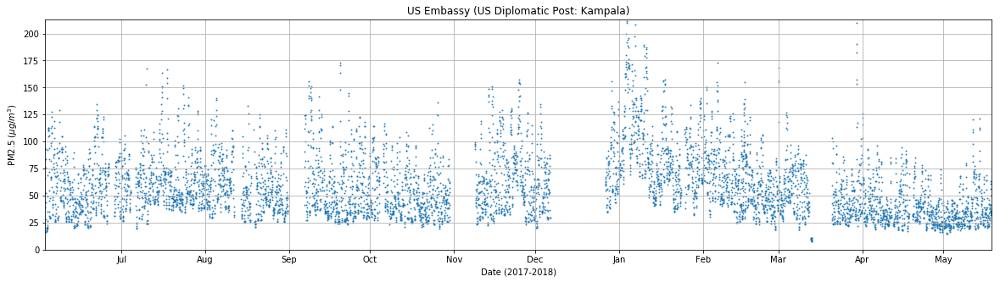- WHO Guidelines: 10 $\mu \text{g/m}^3$ (annual mean)
- EU Guidelines: 18 $\mu \text{g/m}^3$
- US Guidelines: 12 $\mu \text{g/m}^3$
US Embassy sensor: by hour
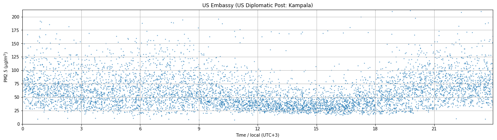
Other sensors in other locations in city agree with general trend.
Night time peak found in other tropical and subtropical cities.
- Any advice or comments?

US Embassy sensor
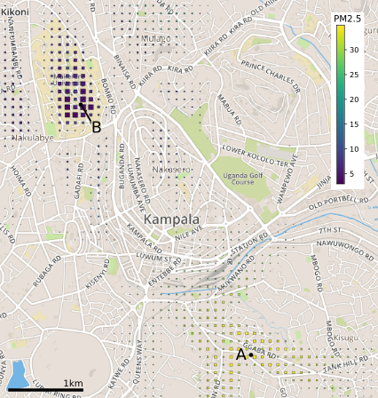- Provides good, reliable, calibrated data.
- Only tells us about pollution at the Embassy (A).
Methods for estimating pollution
- Land Use Regression
- not probabilistic, typically linear regression, long term avgs
- Ideally requires 40+ sensors... [expensive]
- Dispersion models (include box and Gaussian plume models). Really depend on having an idea where pollution is from.
- Advection/diffusion models (sources? how to make probabilistic?)
- our long-term aim (see Wikle 2002)
- Not my expertise, comments?
Hoek, Gerard, et al. "A review of land-use regression models to assess spatial variation of outdoor air pollution." Atmospheric environment 42.33 (2008): 7561-7578.Wu, Jiansheng, et al. "Applying land use regression model to estimate spatial variation of PM2. 5 in Beijing, China." Environmental Science and Pollution Research 22.9 (2015): 7045-7061.Wikle, Christopher K. "A kernel-based spectral model for non-Gaussian spatio-temporal processes." Statistical Modelling 2.4 (2002): 299-314.
Plan
Can we combine lots of low-cost sensors with a few precision devices to acheive similiar accuracies to a full-scale network?
PART 1: HARDWARE DEVELOPMENT
Project development
Began with trying the Shinyei sensor hooked up to a phone (2014).


Boda boda deployment
Engineer Bainomugisha. Ssematimba Joel hardware dev.
Switched to OPC sensor from AlphaSense.

From left to right: Ssekanjako John, the boda boda driver; me; Engineer Bainomugisha.
Static site deployment

Static site deployment

Project development

unobtrusive hardware...
PART 2: COMBINING SENSORS
Basic Gaussian Process Regression
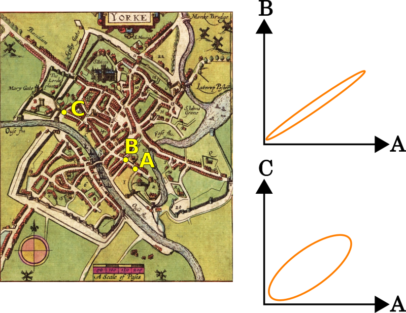
Basic Gaussian Process Regression

We would also include time as an input.
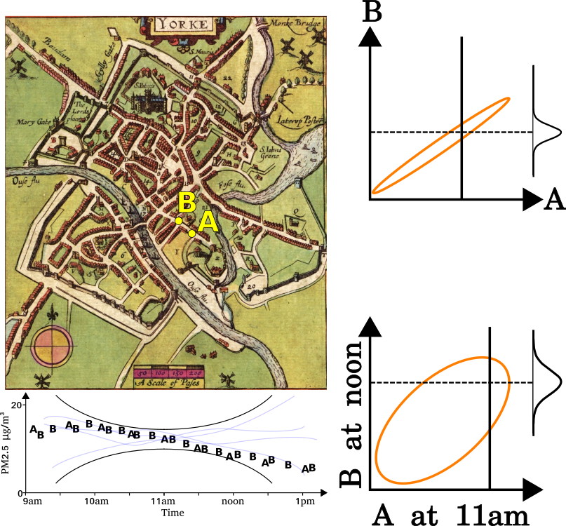
Basic Gaussian Process Regression
The function that describes this is known as the kernel. It is used to compute the covariance between all the training (and test) points to produce a covariance matrix
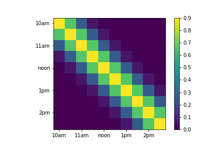Basic Gaussian Process Regression
We can compute the covariance between two sensors over time,
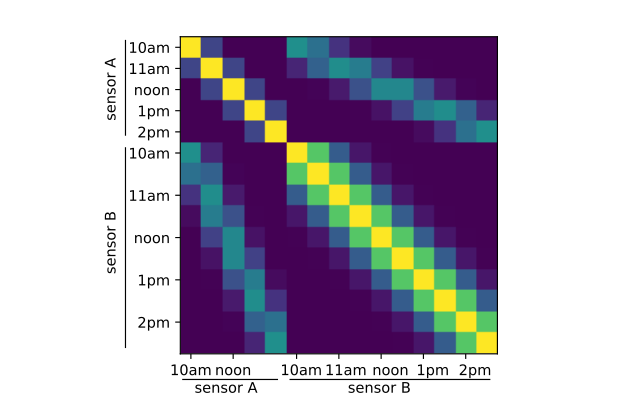Basic Gaussian Process Regression
Using a GP model, with inputs:
- latitude, longitude and time
- time-of-day
- distance from large roads (data from OSM)
- MSc student scraping traffic data from google maps!
We can treat these variables as simply inputs to the GP.
Coregionalised Gaussian Process Regression
Supposing one sensor reports 50% of the actual value?
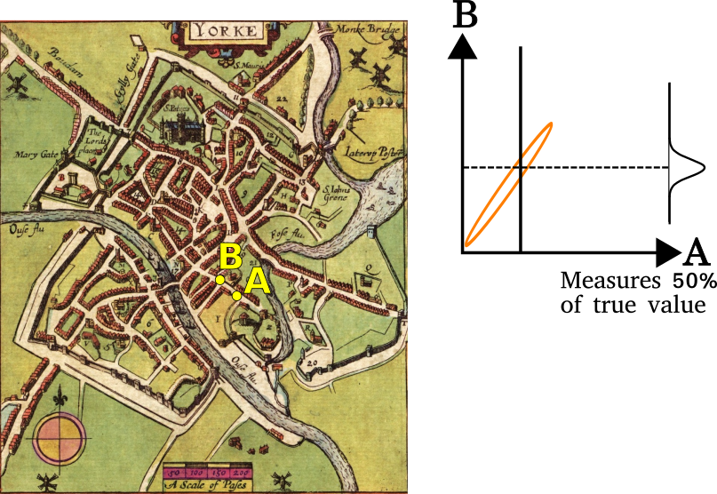Coregionalised Gaussian Process Regression
Scale the covariance by elements from a 'coregionalisation' matrix. In this case we assume simply that the sensors are proportional to each other. So we use a rank-one covariance matrix, $\mathbf{w} \mathbf{w}^\top$, and need to estimate a single value for each sensor (in vector $\mathbf{w}$)
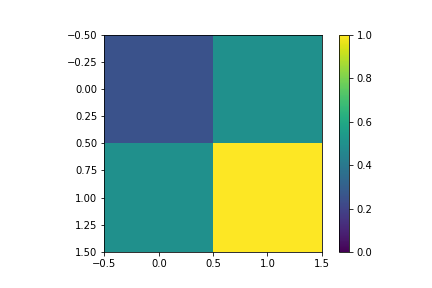 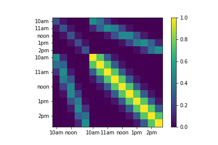Note: Computationally efficient if measurements are taken at the same times.
Combining Sensors
Sensors aren't necessarily calibrated, but are still correlated
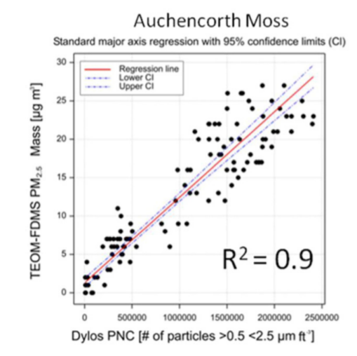 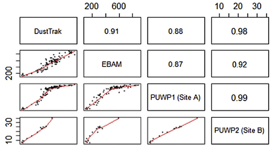 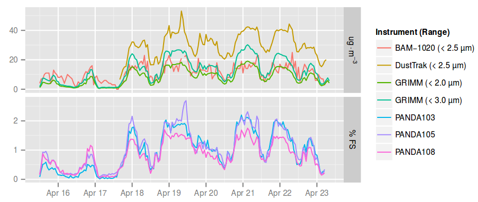Steinle, Susanne, et al. "Personal exposure monitoring of PM2. 5 in indoor and outdoor microenvironments." Science of the Total Environment 508 (2015): 383-394.
Gao, Meiling, Junji Cao, and Edmund Seto. "A distributed network of low-cost continuous reading sensors to measure spatiotemporal variations of PM2. 5 in Xi'an, China." Environmental pollution 199 (2015): 56-65.
Holstius, David M., et al. "Field calibrations of a low-cost aerosol sensor at a regulatory monitoring site in California." Atmospheric Measurement Techniques 7.4 (2014): 1121-1131.
Combining Sensors
Sensors aren't necessarily calibrated, but are still correlated
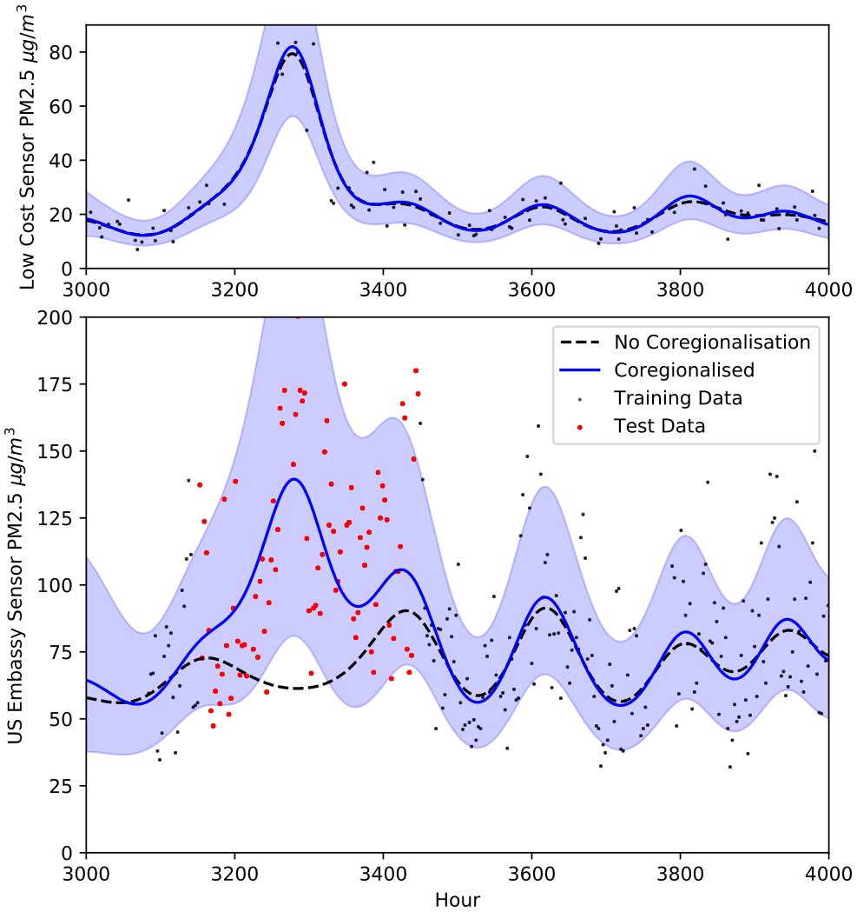Calibration with Coregionalisation
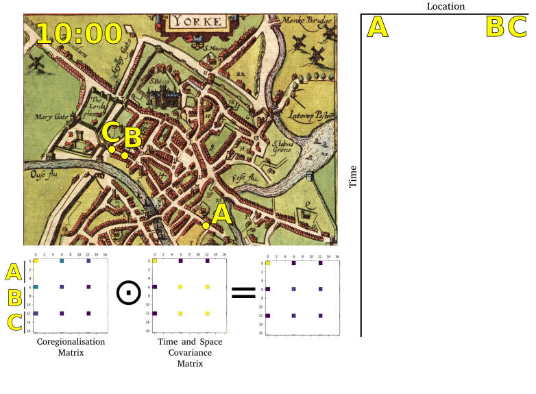
Calibration with Coregionalisation
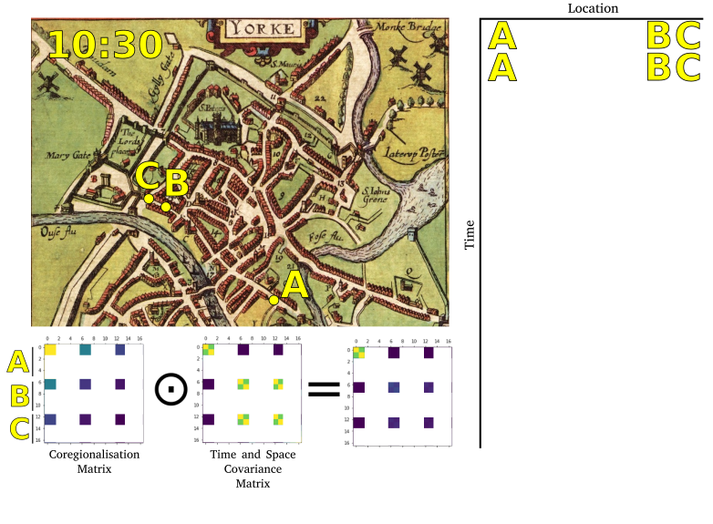
Calibration with Coregionalisation
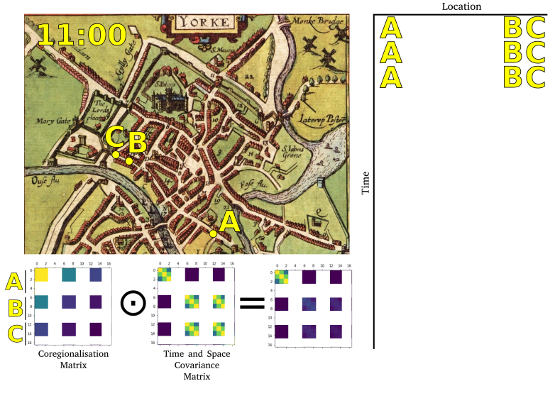
Calibration with Coregionalisation
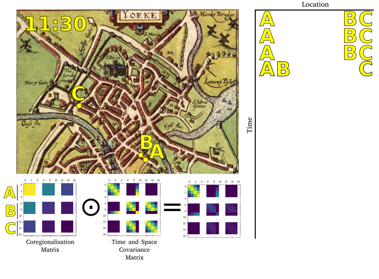
Calibration with Coregionalisation
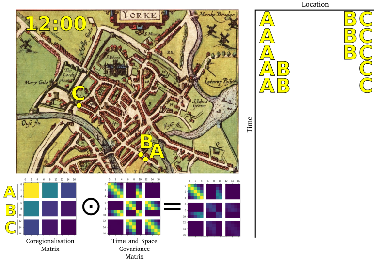
Calibration with Coregionalisation
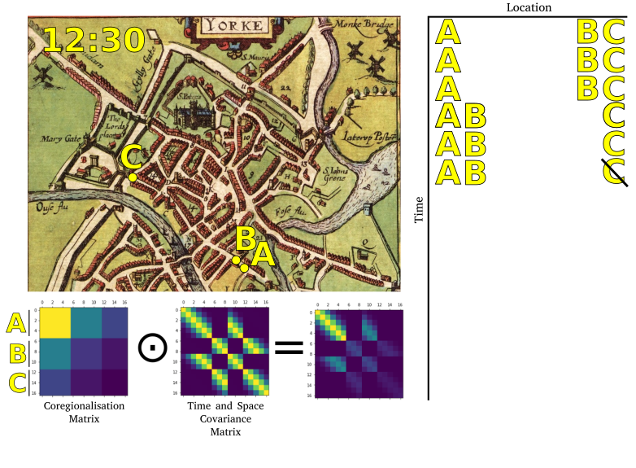
Calibration with Coregionalisation
- Need to consider sensor proximity
- Assume sensors are proportional (rank-one, $\mathbf{w} \mathbf{w}^\top$)
- Toy example: Three sensors. One sensor swaps location.
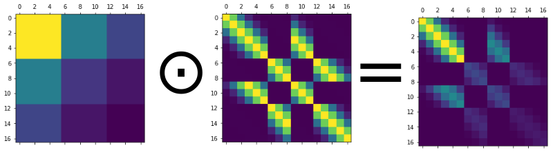
Element-wise product (not Kronecker product) - Hyperparameters $\mathbf{w}$ only relevant where 'proximity' matrix is non-zero. So need to have sensors co-located to estimate these.
- Need to use CCD or similar to incorporate uncertainty in $\mathbf{w}$.
- Will look at this in more detail later in the talk...
PART 3: BODA BODAS
Boda bodas
video!
Boda bodas
- Boda-bodas provide spatial detail about pollution
- Might help with calibrating fixed sensors?
- Appear to be providing reasonably 'realistic' data
Boda boda data
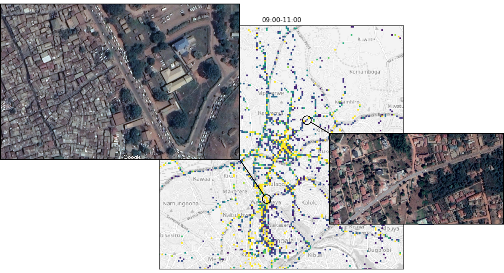$w$ might change?
- Need very regular calibration (problems with clogging) 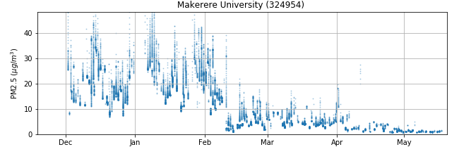 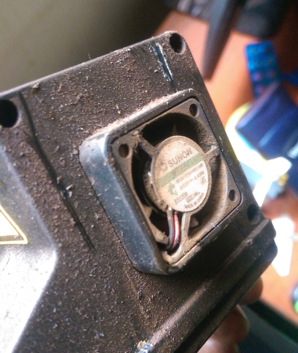
- Estimates of $\mathbf{w}$ will need to vary. Model with a GP too?
$w$ might change?
I want my predictions to account for this varying uncertainty in the calibration...
Model these scaling parameters with a GP.

$w$ might change?
Simulated simple example (using HMC): Two sensors
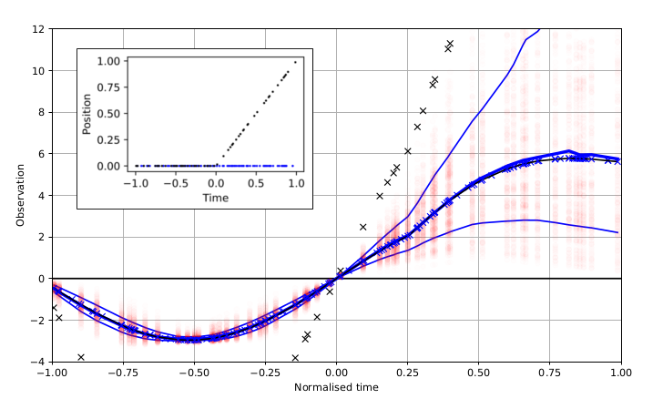After separating the low-cost sensor's calibration grows increasingly uncertain. Blue lines are one standard error
Sensor network?
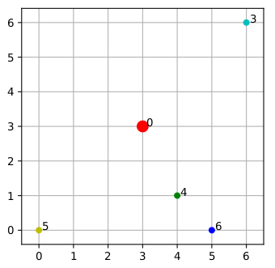Animate
Sensor network?
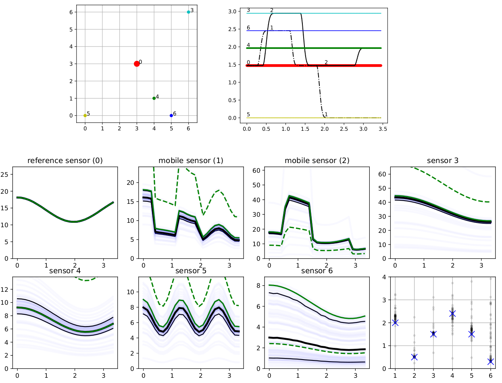Future ideas
- Use active learning to select location for boda boda to visit
(calibration, exploration, hyperparameters) - Optimise static sensor placement (current data, census data, road network).
- Look at sources of pollution to try to start assigning causality.
- Apply differential privacy to ensure boda location remains private.
- Correlate with hospital admissions?
- Incorporate weather data.
- Need to provide as part of real-time pipeline.
- Make model amenible to online learning.
Actions/Effects
- Awareness raising - leads to civic response?
- If we get causation - we'll know what to target.
- Baseline necessary for mitigation to be assessed.
- KCCA planning non-motorised area in Old Kampala!
- Useful to other researchers in epidemiology etc.

Thanks
DIL Berkeley award, ARM, the Urban Observatory, the EPSRC and Google.org.
Engineer Bainomugisha; Ssematimba Joel


Pius Kavuma, AI Lab (3d printer!); Irene Michalaki, ARM;
Mauricio Alvarez and Neil Lawrence
Research Associate Position
- Google.org funded position
- Working with Mauricio Alvarez, Richard Wilkinson, myself and Kampala collaborators on this project
- (handling calibration, scale, active learning, online learning, deployment, etc)
- Two-year position - flexible start.
- Deadline: This Saturday, 16th November 2019!
- Feel free to email me to find out more. m.t.smith@sheffield.ac.uk
- Working with another RA who is focused on incorporating physics into the GP model.
- Link to application: http://bit.do/mljob

Questions for you!
- Protocols for pollution survey?
- Humidity?
- Thoughts on the mobile sensors?
- Distinguishing pollution sources by PM size??
- Other pollutants we should be measuring? (low cost?)
- Fairly simple public health experiments? (currently handing data onwards to the Lung Inst. etc)
- Problems with fairly quick clogging from dust.
- Develop a proposal describing a set of possible interventions? Who have you worked with on this?
References
Schwander, Stephan, et al. "Ambient particulate matter air pollution in Mpererwe District, Kampala, Uganda: a pilot study." Journal of environmental and public health 2014 (2014).
Kirenga, Bruce J., et al. "The state of ambient air quality in Two Ugandan cities: a pilot cross-sectional spatial assessment." International journal of environmental research and public health 12.7 (2015): 8075-8091.
Manchester air pollution averages:
http://www.manchester.gov.uk/download/downloads/id/24305/greater_manchester_air_quality_annual_status_report_asr_2015.pdf
Diurnal peak time in sub-tropical/tropical locations
Latha, K. Madhavi, and K. V. S. Badarinath. "Seasonal variations of PM10 and PM2. 5 particles loading over tropical urban environment." International journal of environmental health research 15.1 (2005): 63-68.
Zhang, Yan-Lin, and Fang Cao. "Fine particulate matter (PM 2.5) in China at a city level." Scientific Reports 5 (2015): 14884.